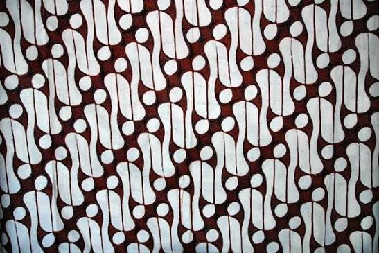
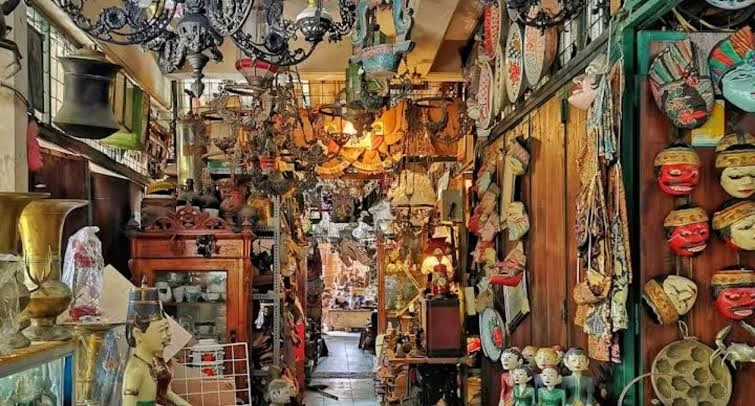

2. Serabi Notosuman

Jajanan tradisional manis khas Solo, langsung dari Sentra Notosuman.
Explore The Beauty of Solo
Rekomendasi oleh oleh yang cocok untuk dibawa pulang atau buat keluarga dirumah

Kain batik motif khas Solo, cocok buat kado atau koleksi pribadi.
Jajanan tradisional manis khas Solo, langsung dari Sentra Notosuman.

Kaos, totebag, dan aksesoris lucu dengan tema Solo.